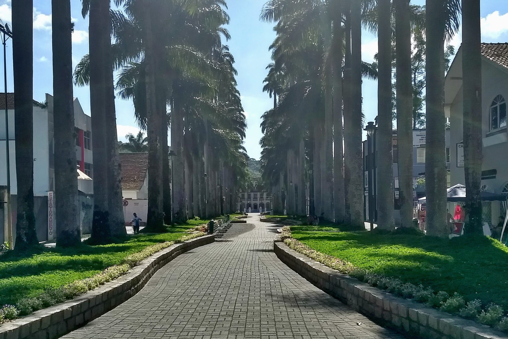

Joinville
Joinville, localizada no estado de Santa Catarina, é um importante destino turístico da região sul do Brasil. Conhecida como a "Cidade das Flores" devido ao grande número de flores e jardins espalhados por sua cidade, Joinville é famosa por seu ambiente tranquilo, sua herança cultural europeia, especialmente a de origem germânica, e pela forte tradição em eventos culturais, como o Festival de Dança de Joinville, que é o maior evento de dança do mundo.
Além de seu potencial turístico relacionado à cultura e à natureza, a cidade também é um importante polo industrial e econômico, o que a torna uma cidade com boa infraestrutura para o turismo de negócios e lazer. Joinville é um excelente destino para quem deseja uma experiência que une natureza, história, arte e gastronomia. Com uma boa oferta de museus, parques e eventos, Joinville se torna uma cidade bastante atrativa tanto para turistas nacionais quanto internacionais.
Principais pontos turísticos
- Museu Nacional de Imigração e Colonização
- Rua das Palmeiras 
- Parque Zoobotânico de Joinville
- Mirante de Joinville
- Castelo de Joinville
O Museu Nacional de Imigração e Colonização preserva e conta a história da colonização alemã e europeia em Joinville. O museu apresenta objetos, fotografias, documentos e uma rica coleção sobre a imigração e as influências culturais de seus primeiros habitantes.
O museu é essencial para quem deseja conhecer a história de Joinville, especialmente a influência das colônias germânicas que são uma parte fundamental da cultura da cidade.
Uma das ruas mais emblemáticas da cidade, a Rua das Palmeiras é famosa por seu charme, com palmeiras alinhadas ao longo da rua, criando uma paisagem bucólica e agradável para passeios. Ao longo da rua, também há lojas e restaurantes, proporcionando uma boa opção para quem quer conhecer o comércio local.
É um excelente local para quem busca relaxar, fazer compras ou apenas passear por uma das áreas mais tradicionais e bonitas da cidade.
O Parque Zoobotânico é uma excelente opção para quem deseja conhecer a fauna e flora da região. Com trilhas, áreas de lazer e um zoológico com diversas espécies de animais nativos, o parque é ideal para famílias e para quem gosta de ecoturismo.
O parque é um dos principais pontos turísticos de natureza de Joinville, oferecendo lazer, educação ambiental e momentos de contato com a natureza.

O Mirante de Joinville oferece uma vista panorâmica espetacular da cidade e da região, sendo um local perfeito para apreciar a paisagem e tirar fotos incríveis. É um local tranquilo, ideal para momentos de descanso e contemplação.
O mirante é um ótimo local para quem deseja ter uma visão completa da cidade, com uma das melhores vistas de Joinville.
O Castelo de Joinville é uma edificação histórica que remonta à época da imigração europeia. Embora o castelo não esteja aberto ao público em termos de visitação interna, sua arquitetura e sua localização nas colinas da cidade o tornam um ponto turístico de destaque.
O Castelo é um dos marcos históricos de Joinville, e sua localização oferece uma visão privilegiada da cidade.
Principais pontos gastronômicos
- Zum Schlauch
- Localização: Centro de Joinville.
- Best Burger & Co
- Localização: Bairro América.
- Fornão Galeteria
- Localização: Bairro Glória.
- Adega Don Maximiliano
- Localização: Bairro América.
O Zum Schlauch foi fundado em Joinville em 2006, inspirado na primeira choperia alemã do Brasil. No almoço, é servido um buffet e pratos à la carte; à noite, o ambiente se transforma com música ao vivo de domingo a domingo. Nos sábados, tem feijoada.
É um lugar agradável e de ótimo atendimento. Ambiente familiar e aconchegante faz deste local uma boa pedida para os finais de semana.
O chef Carlos Bertolazzi comanda hamburguerias em diferentes cidades de Santa Catarina, incluindo Joinville. É o melhor lugar para experimentar o tradicional hambúrguer com muita batata frita. Você pode pedir sabores diferentes, entre eles o cheese salada, o cheese bacon ou o com chicken.
Ambiente despojado e agradável, trazendo uma experiência gastronômica deliciosa.
Da mesma rede do já tradicional italiano O Fornão, a especialidade dessa unidade é o Galeto al Primo Canto, uma refeição típica das colônias italianas no Sul do Brasil.
Mas não são só os frangos que dominam o cardápio do Fornão Galeteria. O restaurante traz o sistema de rodízio de massas e algumas carnes, o que é ótimo pra quem quer provar muitos pratos. Além disso, há muitos petiscos inclusos e um buffet de saladas.
Se você gosta de apreciar bons vinhos e harmonizá-los com deliciosos alimentos, você vai adorar a Adega Don Maximiliano. Ela foi inaugurada em 2001, sendo uma das primeiras a trazer o conceito de adega e enogastronomia para Joinville. Além de oferecer mais de 1000 rótulos de vinhos, a adega Don Maximiliano conta com conhaques, brandy, whiskys, licores, vodkas, gins, tequilas e delicatessen nacionais e importados.
Em relação a gastronomia, a adega possui cardápio quinzenal, disponibilizando diversos pratos deliciosos que mudam a cada quinze dias. Além disso, a adega Don Maximiliano realiza periodicamente eventos enogastronômicos de degustações temáticas e cursos de inicialização ao mundo dos vinhos.
Principais pontos culturais
- Festival de Dança de Joinville
- Localização: Centro de Eventos de Joinville.
- Teatro Juarez Machado
- Localização: Centro de Joinville.
- Museu de Arte de Joinville (MAJ)
- Localização: Centro de Joinville.
- Caminho dos Antiquários
- Localização: Centro Histórico de Joinville.
O Festival de Dança de Joinville é o maior evento de dança do mundo, atraindo milhares de artistas e espectadores todos os anos. Durante o festival, são realizadas competições de dança de vários estilos, apresentações de balé, danças folclóricas e shows internacionais.
Este evento coloca Joinville no mapa mundial da cultura, sendo um dos maiores e mais importantes eventos de dança do mundo, e uma excelente oportunidade para conhecer a diversidade cultural do Brasil e do mundo.
O Teatro Juarez Machado é um importante centro cultural da cidade, oferecendo uma programação diversificada de peças teatrais, musicais, shows e apresentações de dança. O teatro é um dos principais palcos de Joinville para as artes cênicas.
O teatro é um excelente local para quem busca explorar a cena cultural da cidade, com uma programação que contempla diferentes estilos artísticos e culturais.
O MAJ é o principal espaço de arte da cidade, com um acervo que inclui pinturas, esculturas e exposições temporárias de artistas locais e internacionais. O museu também promove eventos culturais e educacionais, como workshops e cursos.
O MAJ é uma importante instituição cultural, proporcionando uma imersão no mundo das artes plásticas, com exposições que são de grande relevância para a cultura da cidade.
O Caminho dos Antiquários é uma rua charmosa e repleta de lojas que vendem peças antigas e colecionáveis. O local oferece uma imersão na história e cultura de Joinville, com a possibilidade de adquirir objetos antigos, móveis restaurados e artigos de decoração com toque de nostalgia.
Para os amantes de antiguidades e da história local, o Caminho dos Antiquários é um lugar ideal para explorar e adquirir peças únicas, além de ser um excelente ponto de passeio.